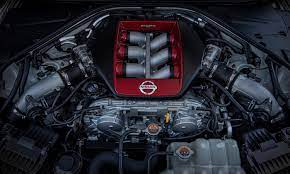

MOTOR DEL
NISSAN GTR

LUGAR TURISTICO SAN ANDRES ISLAS.jpeg "Foto ardilla")
Hasta mi última actualización en septiembre de 2021, el motor del Nissan GT-R R35, que fue la generación más reciente disponible en ese momento, es un motor V6 twin-turbo de 3.8 litros. Aquí tienes algunas especificaciones del motor de esa generación: Tipo de motor: V6 twin-turboalimentado.
1. Desplazamiento del motor: 3.8 litros (3799 cc).
2. Potencia máxima: Varía según la versión y la edición, pero en versiones más recientes, la potencia puede superar los 550 caballos de fuerza (CV).
3. Par máximo: También varía según la versión, pero generalmente supera los 600 Newton-metros (Nm) de par motor.
4. Ubicación del motor: El motor está montado en la parte delantera del vehículo, pero tiene tracción en las cuatro ruedas (AWD), lo que significa que la potencia se distribuye a las cuatro ruedas para mejorar el agarre y el rendimiento.
El motor V6 twin-turbo del GT-R R35 está diseñado para ofrecer un alto rendimiento y una aceleración excepcional, lo que lo convierte en una característica destacada de este icónico automóvil deportivo. Ten en cuenta que las especificaciones pueden variar según la edición y el año del GT-R, por lo que es importante consultar la información más actualizada si estás interesado en un modelo específico.